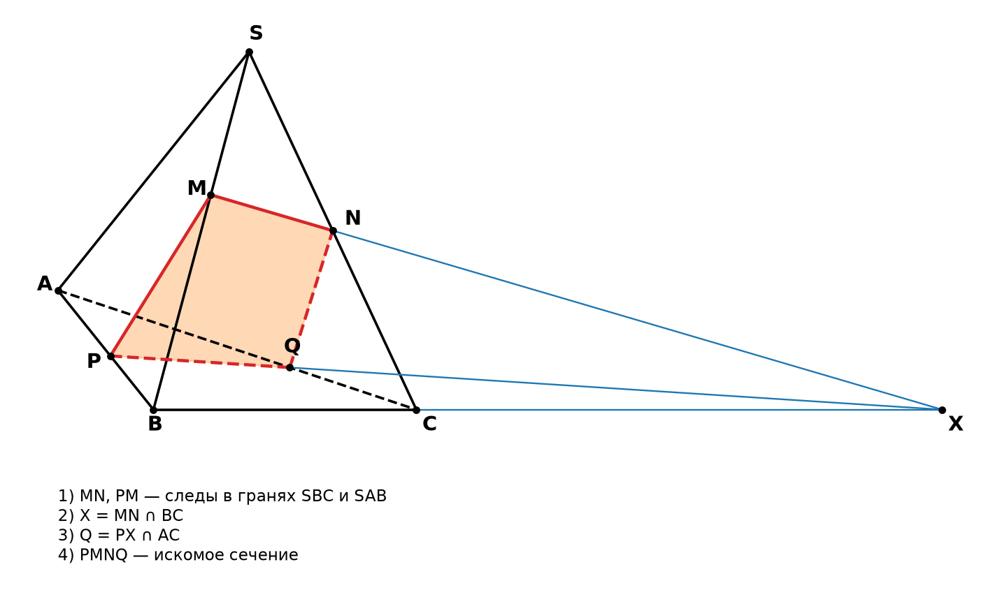

Крути модель пальцем или мышью. Нажми «Смотреть вдоль NP»: зелёное сечение превратится в отрезок, а красное — в «галочку». Значит, красная фигура не плоская.
Вид
Где поставить точку F на AC
Подвигай F. Фигура станет плоской только в одном положении — когда F совпадёт с Q.
Насколько фигура PMNF изогнута
угол излома по диагонали NP
расстояние от F до плоскости MNP
Теория по пунктам
Слова, подчёркнутые жёлтым пунктиром, можно навести мышкой или нажать — появится картинка с объяснением.
Что нужно знать
Аксиома 1. Через три точки, не лежащие на одной прямой, проходит плоскость, и притом только одна. Значит, плоскость сечения уже задана точками M, N, P. Четвёртую точку нельзя выбрать — её можно только построить.
Аксиома 2. Если две точки прямой лежат в плоскости, то вся прямая лежит в этой плоскости.
Аксиома 3. Если две плоскости имеют общую точку, то они пересекаются по прямой, проходящей через эту точку.
Сечение — это многоугольник, стороны которого — отрезки, по которым секущая плоскость пересекает грани (такой отрезок — след). Каждая сторона лежит в своей грани.
Правильное построение
M и N лежат в грани SBC. Соединяем: MN — сторона сечения.
P и M лежат в грани SAB. Соединяем: PM — сторона сечения.
Прямые MN и BC лежат в одной плоскости SBC и не параллельны. Продлеваем их до пересечения: X = MN ∩ BC.
X лежит и в плоскости сечения, и в плоскости ABC. P тоже лежит в обеих. По аксиоме 3 плоскость сечения пересекает основание по прямой PX — это след на основании.
Прямая PX пересекает ребро AC в точке Q — это вершина сечения. PQ — сторона сечения на основании.
N и Q лежат в грани SAC. Соединяем: NQ.
Ответ: сечение — четырёхугольник PMNQ. Невидимые стороны PQ и NQ рисуют пунктиром.
Почему «F на глаз» — ошибка
Если F поставить на AC произвольно, точки M, N, F, P почти никогда не лежат в одной плоскости. Получается пространственный, изогнутый четырёхугольник, а не сечение.
Если бы MNFP был плоским, прямые MN и PF лежали бы в одной плоскости. Тогда они либо пересекаются, либо параллельны.
Пересекаются — точка пересечения лежит и в грани SBC, и в основании ABC. Значит, она лежит на их общей прямой BC. Это и есть точка X.
Параллельны — тогда MN параллельна плоскости ABC, и по свойству MN ∥ BC. Так бывает, только если SM : MB = SN : NC. В задаче это не так.
Вывод: точку на AC нельзя угадать, её находят только через X = MN ∩ BC.
Как проверить себя
Продли на своём чертеже MN и сторону сечения на основании. Они должны пересечься на прямой BC.
Если пересечение получилось не на BC, сечение построено неверно.
Частный случай: если MN ∥ BC, то через P проводят прямую, параллельную BC, до пересечения с AC.

Так построение выглядит на плоском чертеже в тетради.
Сечение куба: разбор
Что добавляется для куба
Всё, что работает для тетраэдра, работает и здесь. Две точки одной грани соединяем — это след сечения. След продлеваем до пересечения с прямой ребра этой же грани (продолжение ребра) — полученная точка лежит сразу в двух гранях.
Теорема. Если две параллельные плоскости пересечены третьей, то линии их пересечения параллельны. У куба противоположные грани параллельны, поэтому следы сечения на них параллельны.
Отсюда приём: если след на одной грани уже построен, а на противоположной грани известна хотя бы одна точка сечения, через неё проводим прямую, параллельную построенному следу.
Сечение куба бывает треугольником, четырёхугольником, пятиугольником и шестиугольником.
Ниже — задачи 6 и 7 из учебника. Решение нарисовано на чертеже зелёным, шаги расписаны под ним. Кнопка «Посмотреть в 3D» покажет то же сечение в объёме.
Практика: построй сечение сам
Решай на плоском чертеже, как в тетради. Каждая новая задача — точки M, N, P на других рёбрах и в других местах. После решения можно посмотреть ту же задачу в 3D.
Как пользоваться чертежом
Прямая — нажми на две точки (вершины или отмеченные точки). Через них пройдёт прямая.
Параллельная — нажми на прямую или ребро, а затем на точку. Через точку пройдёт прямая, параллельная выбранной. Нужна для куба: следы на параллельных гранях параллельны.
Точка — нажми рядом с местом, где пересекаются две прямые или прямая и ребро. Места пересечений подсвечены пунктирными кружками. Если точка лежит на продолжении ребра, продолжение дорисуется пунктиром, а если пересечение ушло за край, чертёж сам отдалится.
Найди все недостающие вершины сечения, отметь их и нажми Проверить. После решения нажми Посмотреть в 3D.